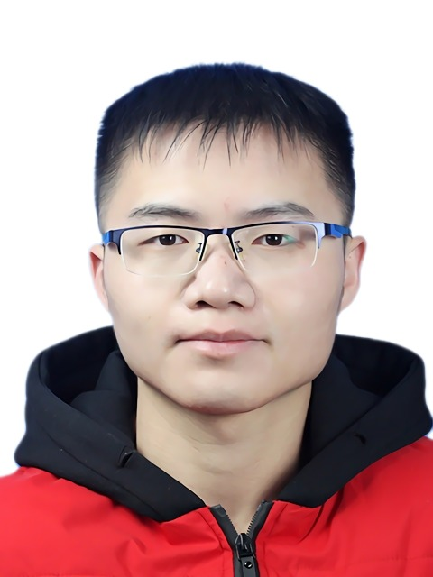

Jian Wen 温键Senior Algorithm EngineerXiaomi EV Company Limited Beijing 100085, China Email: nkuwenjian@gmail.com
|
 |
Biography
Jian Wen was born in Quanzhou, Fujian, China in 1994. He received the B.S. degree in automation and the Ph.D. degree in control science and engineering from Nankai University, Tianjin, China, in 2017 and 2022, respectively. He is currently working as a Senior Algorithm Engineer with the Group of Autonomous Driving, Xiaomi EV Company Limited, Beijing, China.
His research interests include behavioral reasoning, decision making, and motion planning for autonomous driving vehicles.
Selected Journal Papers
-
Jian Wen, Xuebo Zhang, Qingchen Bi, Hui Liu, Jing Yuan, Yongchun Fang, G2VD planner: Efficient motion planning with grid-based generalized Voronoi diagrams, IEEE Transactions on Automation Science and Engineering (T-ASE), vol. 22, pp. 3743-3755, 2025. [PDF]
-
Jian Wen, Xuebo Zhang, Haiming Gao, Jing Yuan, Yongchun Fang, E3MoP: Efficient motion planning based on heuristic-guided motion primitives pruning and path optimization with sparse-banded structure, IEEE Transactions on Automation Science and Engineering (T-ASE), vol. 19, no. 4, pp. 2762-2775, 2022. [PDF]
-
Jian Wen, Xuebo Zhang, Haiming Gao, Jing Yuan, Yongchun Fang, CAE-RLSM: Consistent and efficient redundant line segment merging for online feature map building, IEEE Transactions on Instrumentation and Measurement (T-IM), vol. 69, no. 7, pp. 4222-4237, 2020. [PDF]
-
Qingchen Bi, Xuebo Zhang, Jian Wen, Zhangchao Pan, Shiyong Zhang, Runhua Wang, Jing Yuan, CURE: A hierarchical framework for multi-robot autonomous exploration inspired by centroids of unknown regions, IEEE Transactions on Automation Science and Engineering (T-ASE), vol. 21, no. 3, pp. 3773-3786, 2024. [PDF]
-
Haiming Gao, Xuebo Zhang, Jian Wen, Jing Yuan, Yongchun Fang, Autonomous indoor exploration via graph-based SLAM using directional endpoint features and polygon map construction, IEEE Transactions on Automation Science and Engineering (T-ASE), vol. 16, no. 4, pp. 1531-1542, 2019. [PDF]
Selected Conference Papers
-
Jian Wen, Xuebo Zhang, Qingchen Bi, Zhangchao Pan, Yanghe Feng, Jing Yuan, Yongchun Fang, MRPB 1.0: A unified benchmark for the evaluation of mobile robot local planning approaches, 2021 IEEE International Conference on Robotics and Automation (ICRA), 2021, pp. 8238-8244. [PDF]
-
Jian Wen, Xuebo Zhang, Haiming Gao, Jing Yuan, Yongchun Fang, A novel 2D laser scan matching algorithm for mobile robots based on hybrid features, 2018 IEEE International Conference on Real-time Computing and Robotics (RCAR), 2018, pp. 366-371. [PDF]
Professional Activities
-
Reviewer, IEEE T-ASE, IEEE T-IM, IEEE ICRA, etc
Honors and Awards
-
2022, 南开大学2022届研究生优秀毕业生
-
2021, 南开大学2020-2021学年度研究生优秀学生
-
2020, 南开大学2019-2020学年度研究生公能一等奖学金
-
2020, 国防科技创新特区“挑战地下2020”无人协同组网及路径规划科目第一名
-
2019, 中国光谷人工智能大会最佳论文展示奖
-
2018, IEEE RCAR最佳论文提名奖
-
2017, 南开大学计算机与控制工程学院“明善允能”保研奖学金
| © Jian Wen | Last update: Feb 2025 |